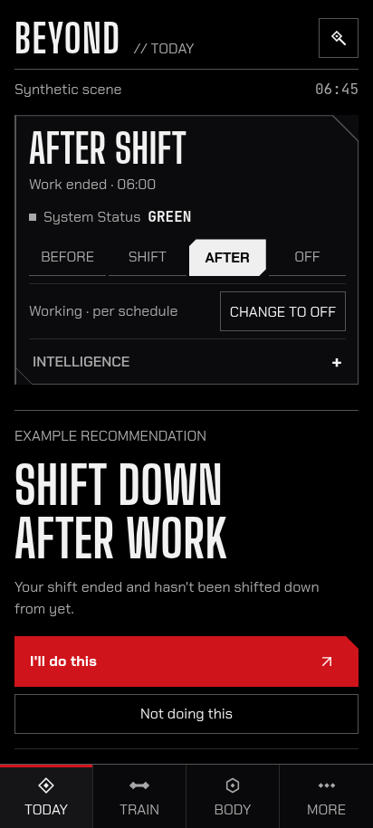
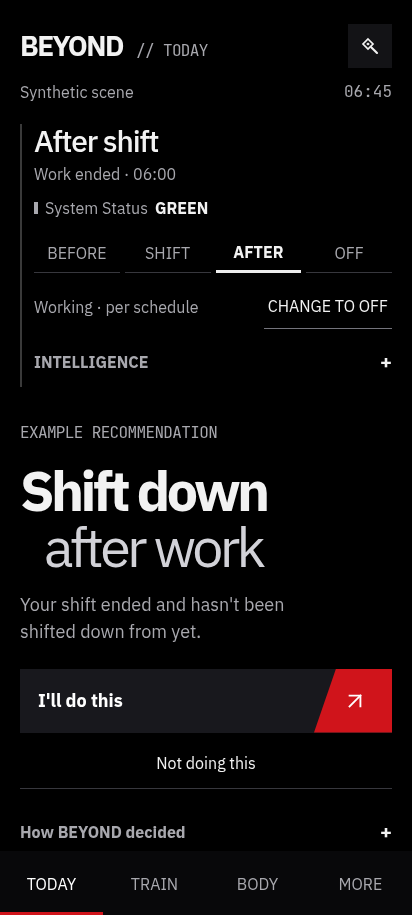
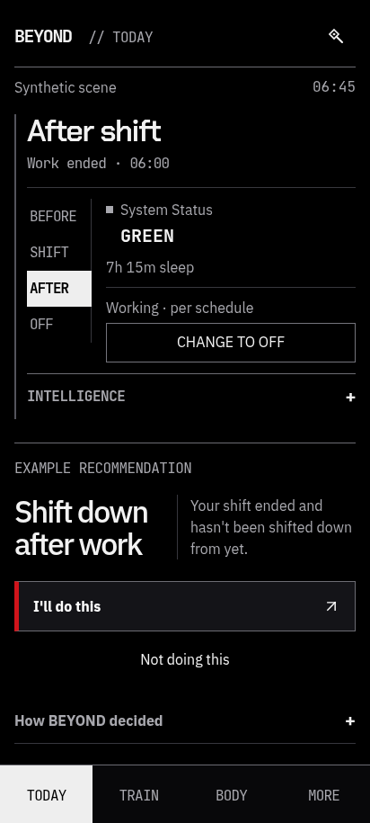

BEYOND / WAYNE SYSTEMS
Real browser captures · same synthetic GREEN / AFTER example · 412 × 915 CSS px. Review evidence, not live Engine output.
D — Neo-Gotham Command
Open interactive D
Angular context enclosure. Tall condensed silhouettes. Familiar vertical composition.
E1 — Suit Interface
Open interactive E1
A continuous field: compact context, expansive recommendation and one deliberate action. Best daily-use candidate.
E2 — Wayne Command System
Open interactive E2
Evidence-oriented architecture: phase spine, factual register and layered inspection. More information, less immediacy.